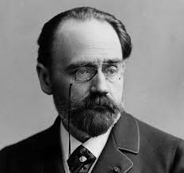
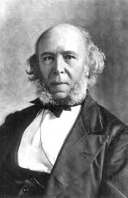

Мифы о социологии — это хорошо знакомые нам представления. Если выйти на улицу и спросить людей о
том, что такое социология, то, скорее всего, девять из десяти ответят, что социология — это наука об
обществе, а социолог — это человек, который ходит с анкетой, придумывает вопросы и задает их людям.
Но если социология — это наука об обществе, то почему мы ищем это самое общество в разговорах с
отдельными людьми?
Карл Маркс когда-то сказал, что общество не состоит из индивидов (хотя не вся социология
присоединяется к этому соображению). В самом деле, можем ли мы свести общество к отдельным индивидам
или к сумме этих индивидов? Один из основателей социологии Эмиль Дюркгейм настаивал на том, что это
не так. Для Дюркгейма общество — это «реальность особого рода», которая не может быть сведена ни к
каким другим реальностям.
Дюркгейм полагал, что именно таким образом можно обосновать необходимость социологии как
самостоятельной дисциплины. В начале XX века, когда он пытался это сделать, социология все еще
находилась под сильным влиянием и в тени психологии, которая занималась индивидуальными сознаниями и
внутренней жизнью отдельного человека. Дюркгейму было принципиально показать, что социология не
может быть редуцирована до жизни отдельных людей, что общество — это самостоятельная реальность. Это
можно было показать, продемонстрировав, что общество обладает собственной принудительной силой, оно
может заставить отдельных индивидов делать что-то, к чему они, в принципе, не предрасположены. С
точки зрения Дюркгейма, по этому влиянию, по его последствиям мы можем распознать воздействие
общества и этим самым доказать, что общество составляет независимую от индивидов реальность.
Дюркгейм выбрал довольно будоражащий пример. Впрочем, этот пример был в то время на слуху у многих.
Он взял за основу статистику самоубийств и попытался показать, что самоубийство вызвано
исключительно социальными причинами. Последовательно разбирая все возможные факторы (климатические,
географические, психологические), Дюркгейм пришел к тому, что самоубийство — это поведение человека,
которое обусловлено состоянием общества. Он выделил разные типы самоубийств и показал, что в
зависимости от состояния общества большее распространение имеет тот или иной тип. Для Дюркгейма это
было доказательством того, что социология имеет дело с реальностью, которая может причинять
самостоятельное воздействие и действует независимо от нашего желания.
Мы привыкли думать, что общество существует вне нас, что это какие-то правила, с которыми мы
вынуждены соглашаться. Например, никто не выйдет на улицу голым. Но Дюркгейму было важно показать,
что общество действует не только помимо нашего желания, но и помимо воли и сознания, что воздействие
общества наиболее глубоко и наиболее отчетливо проявляется в тех самых случаях, когда мы не
понимаем, что оно на нас действует. Мы хорошо знаем, что нужно держать нож в правой руке, а вилку —
в левой, но это не очень интересно. Интересней ситуация, когда мы принимаем решение, думая, что это
наше самостоятельное решение, — а в это время как раз находимся под воздействием социальных
факторов.
Именно таким является решение о самоубийстве. Одновременно это самое важное решение, которое человек
принимает в своей жизни, — решение от этой жизни избавиться. Показав, что самое важное решение в
жизни человека находится под влиянием социальных факторов, Дюркгейм тем самым продемонстрировал, что
у социологии есть свой собственный предмет и этот предмет не сводится к отдельным индивидам. Иными
словами, общество нельзя свести к отдельным индивидам и оно не является их суммой, хотя и
показывается нам через этих индивидов.
Другой классический теоретик социологии, человек, который сделал очень много для ее становления в
Германии, Георг Зиммель говорил, что в обществе индивиды одновременно частично обобществлены и
частично не обобществлены. Обобществленная часть никогда не является исчерпывающей: в индивиде
всегда есть что-то еще, не попадающее в общество и остающееся вне его границ. Но общество — это та
часть индивида, которая обобществлена, которая вовлекается во взаимодействие.
Если мы подумаем о том, как работают наши вопросы к людям на улице, то никогда не сможем сказать, к
кому мы обращаемся. Мы обращаемся к той части, которая обобществлена, — или мы обращаемся к той
части, которая остается вне общества? Иными словами, доступ к обществу не может быть таким простым,
как кажется. И вопрос, который здесь возникает, — как мы, собственно говоря, можем фиксировать
социальность человека? Через что она может быть нам явлена, как мы можем ее наблюдать? В чем
проявляется социальная природа человека?
Например, еще один классик социологии Макс Вебер говорил о том, что предметом социологии является
смысл социального действия. Что это значит? Ведь любые науки о человеке так или иначе занимаются
поведением людей. Но далеко не всякое поведение человека — это поведение осмысленное. Классический
пример: вы сидите у невропатолога, он бьет молоточком вам по коленке и в ответ получает от вас
некоторое поведение. Это поведение не является действием: вы не вносили в него никакого смысла,
никакого содержания. В то же время поведение, с которым вы связываете смысл, — это действие. Но
далеко не все действия являются социальными, а только те из них, которые по своему смыслу
ориентированы на другого человека. И задача социологии, с точки зрения Вебера, состоит в том, чтобы
понять содержание, которое стоит за такими социальными действиями.
Во-первых, мы видим, что в этой задаче, нет ни тени намека на общество. А во-вторых, далеко не факт,
что мы можем понять что-нибудь о смысле социального действия, если подойдем с вопросом к человеку на
улице. В самом деле, всегда ли человек отдает себе отчет в смысле его действия? Не говоря уже о том,
что он далеко не всегда готов рассказать нам об этом смысле. Иными словами, идея, что мы можем
заниматься социологией и изучать человеческую социальность, подходя к людям на улице и задавая им
вопросы, — весьма сомнительная.
Конечно, опрос как метод социологического исследования вполне распространен. И сама по себе идея
общаться с людьми, задавать им вопросы — это неотъемлемая особенность социологии: социология не
может существовать, если ей не интересны другие люди. Но полагать, что, задавая людям вопросы,
получая ответы и складывая потом эти ответы друг с другом, мы можем получить социологию, — это
значит не иметь никакого внятного представления о том, что такое общество и в чем проявляется
человеческая социальность. Поэтому социология обладает целым арсеналом разных методов доступа к
реальности социального.
Авторитеты социологии!

Oгюст Конт
Французский философ, родоначальник позитивизма, он первым дал название науке об обществе, определил специфику предмета и метода социологии. Именно О. Конта считают родоначальником науки социологии как самостоятельной отрасли знания

Эмиль Дюркгейм
Представитель французской школы социологии, сторонник классического позитивизма. Основными социологическими работами Дюркгейма являются "Элементы социологии" (1889), "О разделении общественного труда" (1893), "Правила социологического метода" (1895), "Самоубийство.

Герберт Спенсер
Английский философ и социолог; он разделял представления Конта о социальной статике и социальной динамике. Согласно его учению, общество похоже на биологический организм и его можно представить как некое целое, состоящее из взаимосвязанных и взаимозависимых частей.